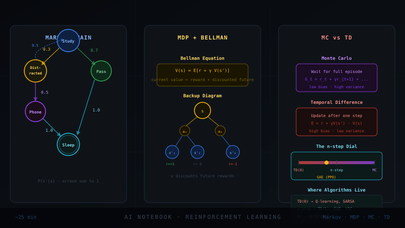

Why These Refuse to Stick
Markov property, Monte Carlo, temporal difference. You have read them five times and they evaporate. The reason is not you. It is that they are usually presented as three disconnected definitions, each in its own notation, with no anchor to anything you can see. Definitions without pictures do not survive.
So we will do the opposite. One running world, drawn the same way every time. One question asked of it: how good is each situation? Three answers to that one question, which turn out to be three points on a single dial. By the end, "Markov", "Monte Carlo", and "TD" will not be vocabulary. They will be three things you can sketch on a napkin and reason about from the picture alone.
The Markov Property: the Present Is Enough
Picture a board game where your next move depends only on the square you are standing on, not on the path you took to get there. It does not matter whether you arrived by a long detour or a lucky shortcut. Standing on "GO TO JAIL" sends you to jail regardless of your history. That is the Markov property: the present square holds everything you need to know the future.
Stated precisely, a process is Markov if the future is conditionally independent of the past given the present:
The phrase that unlocks it: the state is a sufficient statistic for the future. If knowing where you are tells you everything that the full history would have told you about what comes next, the property holds. This is not a law of nature, it is a property of how you define the state. Choose the state badly and the property breaks; enrich the state and it returns.
BUT WAIT Real life clearly depends on history. Stock prices depend on trends, a conversation depends on what was said. So isn't the Markov property just false for everything interesting? ▶
The property is not false, it is a contract you satisfy by choosing the state correctly. The trick is to fold whatever history matters into the present.
Stock price depends on the trend? Then a single price is a bad state. Make the state the price plus recent velocity and volatility, and now the future depends only on that enriched present: Markov restored. A conversation depends on what was said? A single last word is a bad state. Make the state the full dialogue so far, and the next word depends only on that present. This is exactly what a transformer does: its context window IS the Markov state, which is why autoregressive generation is a Markov chain over sequences even though language is full of long range dependence.
The deep lesson, and the one interviewers want: Markov is a property of the state representation, not of the world. Any process can be made Markov by enriching the state enough, in the limit by stuffing the entire history into it. The art of RL and sequence modeling is choosing a state rich enough to be Markov but small enough to learn from. When the true state is hidden and you only see partial clues, you have a POMDP, and the standard fix is to rebuild an approximate state from history, with an RNN, a transformer, or a belief distribution.
Markov Chains: a World That Obeys the Rule
A Markov chain is just a set of states and the probabilities of hopping between them, drawn as arrows. Our running world for the whole blog, a cartoon of a student's day:
Two questions a chain answers, both by pure bookkeeping. Where will I likely be in k steps? Multiply the transition matrix by itself k times. Where do I end up in the long run? The stationary distribution, the fixed point where the flow in equals the flow out, the same eigenvector idea behind PageRank ranking web pages by a random surfer's long run visit frequency. A chain has no rewards and no choices yet. It is the empty stage. Next we put an actor on it.
Adding Choices and Rewards: the MDP
A Markov chain is a world that happens to you. A Markov Decision Process is a world you act in. Three additions turn the empty stage into the setting of all RL:
Actions. In each state you choose, and your choice bends the transition probabilities. Rewards. Each transition pays a number. A policy π. Your strategy: which action to take in each state. The chain's fixed arrows become a menu of arrows you select among.
That last sentence is the bridge nobody points out: a policy turns an MDP back into a Markov chain. Choose how you act, and the menu of arrows becomes a single set of arrows again, with rewards attached. Evaluating "how good is my strategy" is therefore a question about a Markov chain with payouts. That is precisely the question Monte Carlo and TD answer.
The Quantity Everyone Wants: the Value
One question rules them all: how good is it to be in state s under policy π? Good means how much total reward you expect to collect from here to the end. The total, discounted, is the return:
The problem: V is an expectation, an average over all the random futures the chain could produce. We cannot see expectations. We can only see samples, individual days that actually happened. The entire subject of this blog is the two ways to climb from samples we can see to the expectation we want. Hold a concrete number in mind: suppose from Study the true value is V(Study) = 6.0. Neither method knows that. Both are trying to discover it from experience.
Monte Carlo: Live the Whole Day, Then Average
Want to know if a restaurant is good? Eat there many times, write down how much you enjoyed each full visit, average the scores. Do not guess halfway through the meal. Wait until you walk out, then record the total. That is the whole of Monte Carlo.
Formally, Monte Carlo estimates a value by averaging complete returns. Play an episode to termination, compute its actual G, and nudge the estimate toward it:
Run it on the world. The estimate starts at V(Study) = 0. Three full days are lived to Sleep, with observed total returns 8, then 6, then 4. With α = 0.5: after day one V = 0 + 0.5(8 − 0) = 4.0. After day two V = 4 + 0.5(6 − 4) = 5.0. After day three V = 5 + 0.5(4 − 5) = 4.5, circling the true 6.0, and a running average would land on it exactly.
The character of Monte Carlo, the part interviewers want: unbiased but high variance. Each G is a true sample of the return, so the average is correct in expectation, no systematic error. But one day's total swings wildly because it accumulates every random coin flip along the entire episode. And it has a hard requirement: the episode must end. No ending, no return, no update. You cannot Monte Carlo an endless process.
Temporal Difference: Don't Wait, Guess From the Next Guess
You are driving home and you estimated 30 minutes. Ten minutes in, you hit traffic the moment you merge. You do not wait until you arrive to learn, you update right now: "this looks more like 40 minutes". You corrected your guess using a newer guess, before the trip ended. That is temporal difference learning.
Formally, TD replaces the full return G with a one step estimate: the reward you just got plus the discounted value of where you landed. Update toward that:
Run it on the world. V(Study) = 0, V(Pass) = 8 currently. One step happens: from Study you go to Pass, collecting reward R = 0, with γ = 0.9. The TD target is 0 + 0.9 × 8 = 7.2. The error is 7.2 − 0 = 7.2. With α = 0.5, V(Study) ← 0 + 0.5 × 7.2 = 3.6, learned from one step, no need to reach Sleep. The value of Pass seeped one state backward into Study immediately.
The character of TD, the mirror image of MC: biased but low variance. It leans on V(s′), which is currently wrong, so early estimates are systematically off, that is the bias. But it only absorbs one step of randomness per update instead of a whole episode's worth, so it is far steadier. And it needs no ending: TD learns online, step by step, in endless processes. That single property is why almost all of deep RL is built on TD, not MC.
BUT WAIT TD updates a guess using another guess. At the start every value is wrong, so it is wrong numbers correcting wrong numbers. Why does this converge to the truth instead of spiraling into nonsense? ▶
You asked almost this exact question in the Q-learning blog, and the answer is the same machinery, worth seeing in this purer setting.
The save is that each TD target is not pure guess. It contains one piece of hard reality: the actual reward R the environment just paid. Every update is one part real reward, γ parts current belief. Truth physically enters the system at every step through R, and the bootstrap spreads it.
Watch it on the world. At the very start all values are 0, so most TD targets are 0 + 0.9 × 0 = 0 and nothing moves, except at the step into a rewarding terminal, where the target is the real reward with no guess attached. That genuine number anchors the state next to the reward. The following step has a target built partly from that now correct neighbor, and so truth ripples outward from the rewards, one state per sweep. The wrongness washes out from the anchors, it does not amplify.
The formal guarantee: the Bellman expectation operator is a γ contraction, every sweep pulls the value estimates at least a factor γ closer to the unique true V, so errors shrink geometrically. With a decaying learning rate and all states kept visited, tabular TD provably converges to the exact value. The honest footnote, identical to Q-learning: this proof is for tables. Bolt on a neural network for V and the contraction guarantee is gone, which is the deadly triad and the reason target networks exist.
One Dial: MC and TD Are the Two Ends
Here is the unification that makes it all click. MC waits for the full return. TD looks one step ahead. What about two steps? Three? n steps? They are all valid, and they form a continuous dial called n step TD:
The dial is a bias variance trade. Turn toward TD (small n): low variance, high bias, fast online updates. Turn toward MC (large n): high variance, low bias, must wait. The sweet spot is usually in the middle, and there is an elegant way to average over all n at once with a decay factor λ, giving TD(λ) and eligibility traces, a single knob λ sliding smoothly from TD(0) = one step TD to TD(1) = Monte Carlo.
Now Watch Them Inside the RL You Know
These are not separate topics from RL. They are its skeleton. Every algorithm in your other blogs is one of these primitives wearing a costume.
| What you know | Is really | The connection |
|---|---|---|
| The state in any RL problem | a Markov state | chosen rich enough that the future depends only on it; a transformer's context window is one |
| An environment + your policy | an MDP collapsed to a chain | fixing π turns the action menu into one reward bearing Markov chain |
| REINFORCE returns | Monte Carlo | full episode returns, unbiased, high variance, the reason REINFORCE is noisy |
| PPO / Q-learning critic | TD | V and Q trained by the TD update of §7; the δ you bootstrap is the TD error |
| GAE in PPO | TD(λ) | exactly the n step dial of §8, λ averaging trades the critic's bias against the return's variance |
| The Q-learning max | TD + control | TD applied to Q with a max in the target, learning the best policy off policy |
| DQN target network | stabilized bootstrapping | freezing V(s′) in the TD target so the guess driving the guess holds still |
Read that table top to bottom and the whole field reorganizes. Markov gives you a state worth reasoning about. The MDP gives you choices and rewards on top of it. Value is the thing you want. Monte Carlo and TD are the two ways to estimate it from experience, and n step / TD(λ) is the dial between them. Policy gradient methods like PPO use these values to reduce the variance of their gradients; value methods like Q-learning use them as the whole answer. There is nothing else underneath. These four ideas are the foundation.
The Markov property says the present state holds all you need to predict the future, which is true whenever you define the state richly enough. A Markov chain is a world obeying it; an MDP adds actions, rewards, and a policy, and fixing the policy turns it back into a chain with payouts. The thing we want is the value, the expected total reward from a state, which we can never see directly, only sample. Monte Carlo estimates it by living whole episodes and averaging their returns: unbiased, high variance, needs an ending. TD estimates it after a single step by trusting its own next guess plus the real reward just received: biased, low variance, works online forever. n step TD and TD(λ) are the dial between them, and every RL algorithm you know, REINFORCE, PPO, GAE, Q-learning, DQN, is one of these primitives in a costume.